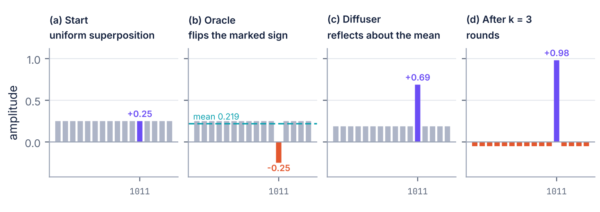
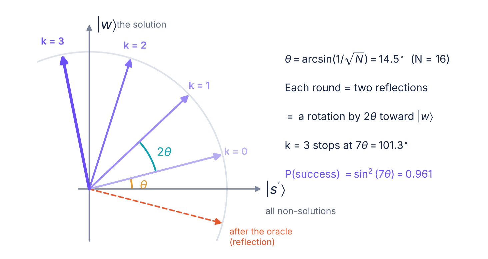
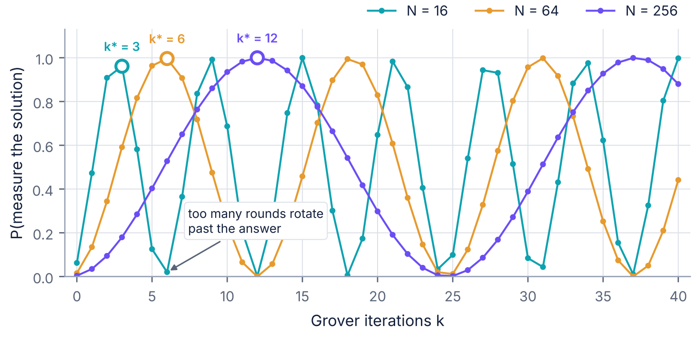
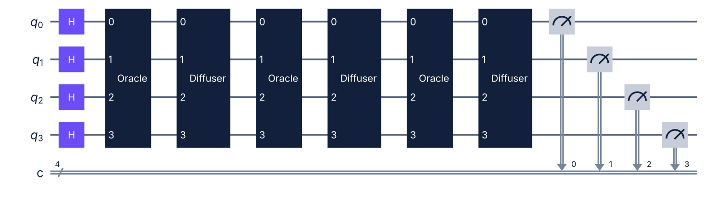
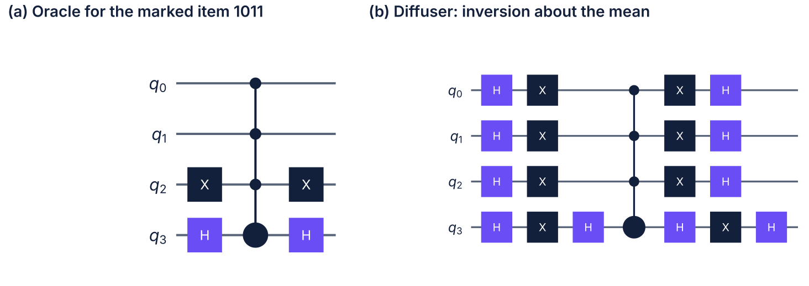
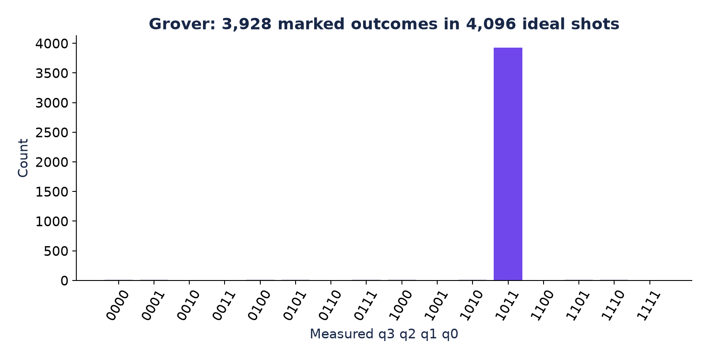
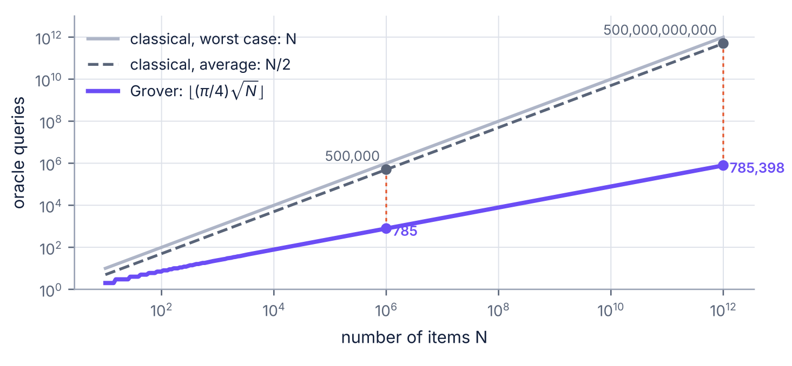

ในบทความนี้
In this post
Search contract — ค้นหาอะไรและนับอะไร
ดาวน์โหลดประกอบซีรีส์
คู่มือฉบับเต็ม (PDF ภาษาอังกฤษ · 43 หน้า · 4.1 MB)
โค้ด ตัวอย่าง และแบบฝึก (ZIP)
บทที่ 2/7 · ดัดแปลงจากเอกสาร Quantum Algorithms for Programmers, Edition 1.0 หน้า 9–15 พร้อมโค้ดและคำอธิบายที่ตรวจซ้ำสำหรับเว็บ
Grover’s algorithm หาคำตอบหนึ่งรายการจาก N candidates ที่ไม่มีโครงสร้างให้ใช้ โดยเรียก predicate f(x) ราว (π/4)√N ครั้ง เทียบกับ classical search ที่ใช้ Θ(N) queries นี่เป็น quadratic speedup ใน oracle model และเป็นขอบเขตที่ optimal สำหรับ unstructured search
สมมติเรามี candidate 16 รายการและคำตอบคือ 1011 ตัวอย่างจะสร้าง oracle ที่รู้ marked string นี้เพื่อให้ตรวจ circuit ได้ การรู้คำตอบล่วงหน้าเป็น fixture สำหรับการสอน ในโจทย์จริงเราต้องมี reversible predicate ที่ตรวจ candidate ได้โดยไม่ต้องรู้คำตอบก่อน เช่นวงจรตรวจเงื่อนไขที่ต้องการ
ผลเปรียบเทียบต้องนับงานเดียวกัน การอ่าน array ธรรมดา การค้นด้วย index และการคำนวณ reversible predicate มี cost ต่างกัน ถ้าข้อมูลมีโครงสร้างที่ classical algorithm ใช้ได้ เราต้องใช้ baseline นั้นแทนการบังคับให้ classical scan ทุกครั้ง
Flip and reflect — probability ยังไม่เปลี่ยนหลัง oracle
เริ่มด้วย H บน qubit ทั้งสี่ ได้ amplitude 1/√16 = 0.25 เท่ากันทุก state Phase oracle เปลี่ยนเฉพาะ amplitude ของ |1011⟩ เป็น −0.25 ขนาดกำลังสองยังเป็น 0.0625 เหมือนเดิม ถ้าวัดตรงนี้จะยังสุ่มเท่าเดิม


จากนั้น diffuser เปลี่ยน amplitude ax เป็น 2ā − ax โดย ā เป็นค่าเฉลี่ยหลัง oracle สำหรับรอบแรก ā = 0.21875 ทำให้ marked amplitude เป็น 0.6875 ส่วนรายการอื่นเป็น 0.1875 probability ของคำตอบจึงกลายเป็น 0.47265625
การกลับเครื่องหมายเป็นการ encode ส่วน diffuser ทำให้ phase ส่งผลต่อ measurement นี่คือรูปแบบเดียวกับ H–Z–H ในตอนแรก แต่ขยายจากสอง amplitudes เป็นสิบหก amplitudes
Rotation — เหตุใดเพิ่มรอบแล้วแย่ลง


มอง state ในระนาบที่มีแกน “คำตอบ” และ “ผลรวม non-solutions” กำหนด θ = arcsin(1/√N) การทำ oracle และ diffuser คือ reflection สองครั้ง รวมเป็น rotation 2θ หลัง k รอบ success probability เท่ากับ sin²((2k+1)θ)


เลือกจำนวนรอบให้ (2k+1)θ ใกล้ π/2 สำหรับ N=16, θ ≈ 14.48° และ k=3 ให้โอกาส 96.13% แต่ k=5 เหลือ 12.55% อัลกอริทึมจึงต้องมี stopping rule สำหรับกรณีหนึ่งคำตอบในตัวอย่าง floor((π/4)√N) ให้สามรอบ หากมี M คำตอบ ให้แทน sin θ ด้วย √(M/N) และถ้าไม่ทราบ M ต้องใช้นโยบายค้นหาอีกแบบ
อย่านำ histogram รอบเดียวไปใช้เลือก stopping rule บนข้อมูลทดสอบแล้วอ้างความสำเร็จบนข้อมูลเดียวกัน เรามีทฤษฎีให้กำหนดจำนวนรอบก่อนรัน และมี statevector test ตรวจสูตรอย่างอิสระ
Implementation — เปิด oracle และ diffuser




ส่วนโค้ดสำหรับอ่านแนวคิด ใช้ไฟล์เต็มพร้อม imports จาก companion และคำสั่งใน Run & explore ด้านล่าง
def phase_oracle(n, marked):
if n < 2 or len(marked) != n or set(marked) - {"0", "1"}:
raise ValueError("Use n >= 2 and an n-bit marked string")
qc = QuantumCircuit(n, name="Oracle")
zeros = [q for q, bit in enumerate(reversed(marked)) if bit == "0"]
for q in zeros:
qc.x(q)
qc.h(n - 1)
qc.mcx(list(range(n - 1)), n - 1)
qc.h(n - 1)
for q in zeros:
qc.x(q)
return qc
def diffuser(n):
qc = QuantumCircuit(n, name="Diffuser")
qc.h(range(n))
qc.x(range(n))
qc.h(n - 1)
qc.mcx(list(range(n - 1)), n - 1)
qc.h(n - 1)
qc.x(range(n))
qc.h(range(n))
return qcreversed(marked) เป็นเรื่องสำคัญ เพราะ qubit 0 อยู่ทางขวาสุดของ string เราใส่ X บนตำแหน่งที่ target เป็น 0 เพื่อ map marked state ไป |1111⟩ แล้ว H–MCX–H ทำ multi-controlled Z จากนั้น undo X ให้ basis กลับตำแหน่งเดิม
diffuser ใช้ H และ X ครอบ phase flip อีกชั้น วงจรนี้เท่ากับ negative ของ D = 2|s⟩⟨s| − I ซึ่งต่างกันเพียง global phase จึงวัดเหมือนกัน test ตรวจ matrix ทั้งก้อนโดยยอมรับ global phase นี้ ไม่ได้ตรวจแค่ outcome ที่โชคดีตัวเดียว
Measured outcome — query saving ไม่ใช่ wall-clock saving
ผลรันที่บันทึก 24 November 2026
N=16; marked=1011; iterations=3
Theory=0.961319; statevector=0.961319
Sampled hits=3928/4096
Success by iterations 0..5: [0.0625, 0.4727, 0.9084, 0.9613, 0.5817, 0.1255]

รันบน ideal Aer simulator 4,096 shots ได้คำตอบ 3,928 ครั้ง หรือ 95.90% เทียบกับ exact probability 96.13% ความต่างเป็น sampling noise ค่า standard error ตามทฤษฎีประมาณ 0.30 percentage points ตัวเลขนี้ไม่ใช่ hardware error rate และเวลาที่ simulator ใช้ไม่ใช่เวลา quantum computer


| N | Classical scan ≈ N/2 | Grover queries ≈ π√N/4 |
|---|---|---|
| 10³ | 500 | 24 |
| 10⁶ | 500,000 | 785 |
| 10⁹ | 500,000,000 | 24,836 |
ตัวเลข classical เป็นค่าประมาณของการไล่ตรวจตำแหน่งแบบสุ่มเท่ากัน จำนวนจริงเฉลี่ย (N+1)/2 หากนับการตรวจที่พบด้วย ส่วน Grover นับ oracle calls เท่านั้น ต้นทุนต่อ call รวม reversible computation, ancilla และ error correction ได้มาก งานของ Babbush และคณะอธิบายว่าค่า overhead ทำให้ quadratic advantage เปลี่ยนเป็นประโยชน์จริงได้ยากบนเครื่อง fault-tolerant รุ่นแรก
ผลที่บทนี้แสดงได้: circuit ขยาย probability ตามทฤษฎี ผลที่ยังสรุปไม่ได้: การค้นข้อมูลจริงเร็วกว่าระบบ classical ที่จัด index หรือทำ parallel search อย่างเหมาะสม
อ้างอิง: [3]
Run & explore — ลงมือทดลอง
Complete code · GroverTests · Exercise · Setup & troubleshooting
ใช้ Python 3.12–3.13 และ virtual environment ตาม README ไม่ต้องใช้ API key หรือ quantum hardware หากยังไม่ติดตั้งให้ทำตามตอน 1 หรือ README
# From the companion root, with the virtual environment active
python grover_search.py
python -m unittest discover -s tests -p test_algorithms.py -k GroverTests -vลองต่อด้วยตัวเอง
เปลี่ยน target เป็น 0010 และเปรียบเทียบ k=0, 1, 3, 5 ตรวจว่า oracle กลับ phase ของ state ที่ถูกต้อง แล้วอธิบายต้นทุนที่ query table ยังไม่นับ
Sources & verification — แหล่งอ้างอิง
Primary sources และขอบเขตการตรวจ
เอกสารผู้เขียนเป็นต้นทางของคำอธิบายและภาพที่ระบุ ส่วนลิงก์ข้างล่างเป็นเอกสารวิจัยและมาตรฐานที่ใช้ตรวจข้ออ้าง โค้ดรันซ้ำบน Python 3.13, Qiskit 2.6.2, Aer 0.18.4, NumPy 2.5.5 และ SciPy 1.18.1 วันที่ 24 November 2026 ผลทั้งหมดเป็น local simulation หรือค่าตัวอย่างที่ระบุ ไม่มีการรัน hardware
Search contract: define the task and the unit of cost
Download the series resources
Complete guide (English PDF · 43 pages · 4.1 MB)
Code, examples and exercises (ZIP)
Part 2/7. Adapted from Quantum Algorithms for Programmers, Edition 1.0, pp. 9–15, with web explanations and rerun code.
Grover's algorithm finds one marked candidate among N unstructured possibilities using roughly (π/4)√N predicate queries. A classical search needs Θ(N) queries. This is a quadratic speedup in the oracle model, and the scaling is optimal for unstructured search.
Our search space has 16 items and the marked string is 1011. The example deliberately knows this string to construct a testable oracle. That is a teaching fixture. In a real problem, you need an independently supplied reversible predicate that recognizes a valid candidate without already knowing the answer.
Compare equal tasks. Scanning ordinary memory, using an index, and computing a reversible predicate have different costs. If a classical method can exploit sorting, an index or other structure, that method belongs in the baseline.
Flip and reflect: the oracle alone changes no probability
Apply H to all four qubits. Every amplitude starts at 1/√16 = 0.25. The phase oracle changes only the |1011⟩ amplitude to −0.25. Its squared magnitude remains 0.0625, so immediate measurement is still uniform.
The diffuser replaces amplitude ax by 2ā − ax, where ā is the mean after the oracle. In the first round, ā = 0.21875. The marked amplitude becomes 0.6875, and each other amplitude becomes 0.1875. Success probability is now 0.47265625.
The sign flip encodes the predicate; the diffuser makes that phase observable. This repeats the logic of H–Z–H from part 1, now across sixteen amplitudes.
Rotation: why additional rounds can hurt
View the state in the plane spanned by the solution and the uniform combination of non-solutions. Set θ = arcsin(1/√N). The oracle and diffuser are two reflections, producing a rotation by 2θ. After k rounds, success probability is sin²((2k+1)θ).
Choose an integer k that brings (2k+1)θ close to π/2. For N=16, θ ≈ 14.48° and k=3 gives 96.13% success. At k=5 it falls to 12.55%. The one-solution rule floor((π/4)√N) gives three rounds here. With M solutions, sin θ becomes √(M/N); unknown M requires a different search schedule.
Do not choose a stopping rule from one test histogram and report success on the same data. Here theory sets the count before execution, and independent statevector checks verify the probability formula.
Implementation: open the oracle and diffuser
Implementation excerpt. Use the complete companion file with its imports and the Run and explore commands below.
def phase_oracle(n, marked):
if n < 2 or len(marked) != n or set(marked) - {"0", "1"}:
raise ValueError("Use n >= 2 and an n-bit marked string")
qc = QuantumCircuit(n, name="Oracle")
zeros = [q for q, bit in enumerate(reversed(marked)) if bit == "0"]
for q in zeros:
qc.x(q)
qc.h(n - 1)
qc.mcx(list(range(n - 1)), n - 1)
qc.h(n - 1)
for q in zeros:
qc.x(q)
return qc
def diffuser(n):
qc = QuantumCircuit(n, name="Diffuser")
qc.h(range(n))
qc.x(range(n))
qc.h(n - 1)
qc.mcx(list(range(n - 1)), n - 1)
qc.h(n - 1)
qc.x(range(n))
qc.h(range(n))
return qcreversed(marked) matters because qubit 0 is the rightmost character. X gates map zero positions in the target to ones. H–MCX–H implements a multi-controlled Z, and undoing X restores the original basis labels.
The diffuser wraps another phase flip in H and X layers. This circuit implements the negative of D = 2|s⟩⟨s| − I, differing only by a global phase. Measurement is unchanged. Our test checks the entire matrix with this global sign, rather than checking one fortunate sample.
Measured outcome: query savings versus wall-clock savings
Captured run, 24 November 2026
N=16; marked=1011; iterations=3
Theory=0.961319; statevector=0.961319
Sampled hits=3928/4096
Success by iterations 0..5: [0.0625, 0.4727, 0.9084, 0.9613, 0.5817, 0.1255]The ideal Aer run produces 3,928 hits in 4,096 shots: 95.90%, compared with exact probability 96.13%. The theoretical standard error is about 0.30 percentage points. This difference is sampling noise, not a hardware error rate. Simulator execution time is not quantum-device runtime.
| N | Classical scan ≈ N/2 | Grover queries ≈ π√N/4 |
|---|---|---|
| 10³ | 500 | 24 |
| 10⁶ | 500,000 | 785 |
| 10⁹ | 500,000,000 | 24,836 |
The classical column approximates a uniformly located target in a sequential scan; the exact mean including the successful query is (N+1)/2. The quantum column counts only oracle calls. Each call can require substantial reversible computation, ancillas and error correction. Babbush and colleagues analyze why these overheads can make quadratic advantage difficult on early fault-tolerant devices.
Established here: the circuit amplifies probability as predicted. Unestablished: faster real-world search than a suitably indexed or parallel classical system.
Sources: [3]
Run and explore
Complete code · GroverTests · Exercise · Setup & troubleshooting
Use Python 3.12–3.13 and the README virtual environment. No API key or quantum hardware is required. If setup is incomplete, follow part 1 or the README.
# From the companion root, with the virtual environment active
python grover_search.py
python -m unittest discover -s tests -p test_algorithms.py -k GroverTests -vYour experiment
Change the target to 0010, compare k=0,1,3,5, verify the phase flip lands on the correct basis state, and list the costs omitted by the query table.
Sources and verification
Primary sources and verification scope
The author’s guide supplies the credited explanations and illustrations. Linked papers and standards support the claims. Code was rerun locally on 24 November 2026 with Python 3.13, Qiskit 2.6.2, Aer 0.18.4, NumPy 2.5.5 and SciPy 1.18.1. Results are local simulations or explicitly hypothetical inputs; no quantum hardware was used.